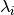
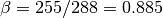
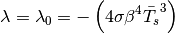
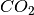
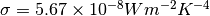
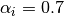
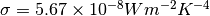
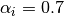

第3课：气候敏感度和反馈¶
前言¶
- 关于之前课后作业的问题和讨论
- 零维EBM
- 指数张弛
- 逐步将模型转到平衡态
- 具有冰反照率反馈的多重均衡
- 阅读分配：
- 每个人都需要阅读“气候模型入门（第四版）”第一章和第二章
- 它现在在科学图书馆储备
- 尽快阅读，但绝对在中期考试之前
- 讨论IPython笔记本的使用
1. 反馈概念¶
从电气工程中借鉴的一个概念。大家可能都听过或曾经使用这个术语，但我们今天会尝试更精确的方法。
当系统的一部分输出被添加到输入并随后改变输出时，就会发生反馈：
In [6]:
from IPython.display import Image
Image(filename='./image/feedback_sketch.png', width=500)
Out[6]:

循环系统的结果可以是放大或衰减过程，这取决于循环中获得的符号。
我们将称放大反馈为正反馈和削弱反馈为负反馈。
我们可以把这里的“过程”看作是整个气候系统，它包含许多正反馈和负反馈的例子。
2. 气候反馈：一些定义¶
让我们回到行星能量收支的概念：
这里
是大气层顶净向下能量通量。
因此当行星出于平衡状态，我们有，或进来的太阳能=出去的长波。
假设我们通过增加一些额外的能量来改变气候，可能是由于温室气体的增加或者反射性气溶胶的减少。把这个额外的能量称为辐射强迫，用单位为的R表示。
气候变化将受制于
这里 为全球平均表面温度的变化。这个收支解释了
为全球平均表面温度的变化。这个收支解释了 的两类变化：
- 由于辐射强迫：R -
由于辐射过程变化（内部对气候系统）导致：
的两类变化：
- 由于辐射强迫：R -
由于辐射过程变化（内部对气候系统）导致：
反馈因子：扰动能量收支的线性化¶
气候反馈分析的重要假定是辐射通量的变化正比于表面温度的变化：
这里 是比例常数，单位为。
是比例常数，单位为。
在数学上，我们假设变化足够小，以至于我们可以将关于平衡状态的收支性化（正如我们之前对零维能量平衡模式分析所做的那样）。
使用一阶泰勒级数展开法，的一般定义就是这样
则扰动温度的收支为
我们称为气候反馈参数。
我们需要气候模式的一个关键问题是：
给定的辐射强迫我们预期会变暖多少？
或者更明确地说，如果我们把大气中的二氧化碳浓度加倍（我们将在后面看到，这会产生大约的辐射强迫），会有多大的变暖。
如果有足够的时间，系统将达到新的平衡温度，在这点
因此扰动收支为
或
这里为单位的强迫，为单位的反馈。
请注意，我们尚未为辐射排放调用特定模型（尚未）。这是一个非常普遍的概念，我们可以应用于任何气候模型。
我们已经在这里定义了这样的事情：对于正反馈，，对于负反馈，。这很方便！
反馈分解为几项¶
另一个要注意到的事情，我们可以将总的气候反馈根据不同过程分解为几项：
这是可能的因为我们的线性假定取决于。
例如，我们可以分解净气候反馈为： - 长波和短波过程 - 云和非云过程
这些单独反馈过程可正可负。这是非常强大的，因为我们可以简单地通过比较它们的值来测量不同反馈过程的相对重要性。
让我们保留符号来表示整体或净气候反馈，并使用下标表示具体的反馈过程。
问题：的符号是什么？
对于正的的行星有能量平衡吗？考虑一下你的经验求解能量收支方程。
3. 对于零维能量平衡模式计算¶
我们的原型气候模型是零维EBM
这里 是测量表面温度和辐射温度比值的参数。从观测我们估算
是测量表面温度和辐射温度比值的参数。从观测我们估算

现在我们增加一个入射强迫到模式：
在之前的课程中我们看到可以使用一阶泰勒展开将参考温度 表示为
表示为
比率常数

这里，根据我们刚刚介绍的术语，这个模型是净气候反馈。
按观测的全球平均温度288K和采用我们调整值估算为
请注意，在此模型中我们将反照率视为固定。下面我们将推广到变化的反照率。
这意味什么？¶
这意味着，对于我们投入系统的每的能量的W m -2-2，我们的模型预测表面温度必须增加:math:-1/lambda=0.3 K才能重新建立行星能量平衡。
这个模型只代表一个单一的反馈过程：随着地表变暖，发射到空间的长波增加。
这被称为普朗克反馈，因为它基本上是由于普朗克黑体辐射定律（温度较高=较高的辐射）。
这里和以后我们将用表示这个反馈。为了清楚，我们正在说这个特定的气候模型

每个气候模式有一个普朗克反馈¶
普朗克反馈是最基本和最普遍的气候反馈，存在于每个气候模式中。这仅仅是一个事实的表达，一个温暖的行星比一个冷的行星向太空辐射更多。
正如我们将看到的，我们对 的估计基本上与从复杂GCM诊断的普朗克反馈相同。与我们简单的零维模型不同，大多数其他的气候模式（和真实的气候系统）都有其他的辐射过程，例如。
的估计基本上与从复杂GCM诊断的普朗克反馈相同。与我们简单的零维模型不同，大多数其他的气候模式（和真实的气候系统）都有其他的辐射过程，例如。
4. 气候敏感度¶
现在定义另一个重要项： 平衡气候敏感度（Equilibtrium Climate Sensitivity(ECS)）（指平衡全球平均温度对大气中浓度相对于工业化前加倍的响应。）：大气加倍后，为了平衡行星能量收支所需的全球平均地表变化。
我们将这个温度写为。
ECS是一个重要的数。气候模拟的一个主要目标是提供ECS及其不确定性的更好估算。
对于我们的零维模式估算ECS。我们知道对于任何给定强迫增暖为
为了计算，我们需要知道来自加倍的辐射强迫，其表示为。我们稍后会在这个学期花一些时间来看这个数量。现在，我们只需要一个合理值
我们对ECS的估计直接遵循：
这是一个很好的估计？¶
什么是目前ECS的最佳估计？
最新的IPCC报告AR5给出的可能范围为1.5至4.5K.（这些数字有很多不确定性——我们一定会回到这个问题）
所以我们最简单的简单气候模型显然低估了气候敏感度。
假设真实值是（范围的中间）。
这意味着真正的净反馈是
然后我们可以推断出“缺失”反馈的总数：
没有包含在我们简单模型中的所有过程的净效应是一个正反馈，它提高了平衡气候敏感度。我们的模型不能准确预测全球变暖，是因为它没有考虑到这些正反馈。
（这并不意味着与每个缺失的过程相关的反馈是正反馈！只是所有缺少的反馈的线性总和是正的！
这与我们上面的讨论是一致的。我们以两个例子（水汽和反照率反馈）开始了我们的反馈讨论，这两个例子都是正反馈，都没有出现在我们的模型中！
我们已经看到（在作业练习中）一种将反照率反馈添加到零维模型的简单方法。我们将在下面分析这个版本的模型。但首先，我们来看看现有GCM诊断的反馈。
5. 来自复杂气候模式的反馈诊断¶
来自IPCC AR5的数据¶
这个数字是从最近的IPCC AR5报告中复制的。它显示了来自评估的各种模式的诊断反馈。
（在术语的后面，我们将讨论如何实际的反馈诊断）
请参阅下面的完整引用信息。
In [7]:
feedback_ar5 = 'http://www.climatechange2013.org/images/figures/WGI_AR5_Fig9-43.jpg'
Image(url=feedback_ar5, width=800)
Out[7]:

图9.43 （a）CMIP3和CMIP5模型（左和右列符号）对于普朗克（P），水汽（WV），云层（C），反照率（A），递减率（LR），包含水汽和递减率（WV+LR）以及除Planck（ALL）以外的所有反馈的总和的单个反馈的强度。 继Soden等（2008年）后Soden和Held（2006）以及Vial等人（2013）。 CMIP5反馈源自CMIP5模拟，用于突破CO2浓度四倍增长（4×CO2）。 （b）使用Andrews等人（2012）的回归技术获得的ECS，根据二氧化碳排放总量与所有反馈总和的比例估算。二氧化碳的ERF是Andrews等人（2012）4×CO2强迫的一半，总反馈（ALL + Planck）来自Vial等（2013）。
图表标题从AR5 WG1报告中转载
图例： - P：普朗克反馈 - WV：水汽反馈 - LR：失效率反馈 - WV + LR：结合水汽加上失效率反馈 - C：云端反馈 - A：表面反照率反馈 - ALL：除Plank以外的所有反馈的和，即ALL = WV + LR + C + A
注意： - 这些模型都赞同普朗克反馈。 - 正如我们上面的估计，普朗克反馈大约是。 - 每个模型的水汽反馈是很强的正反馈。 - 递减率反馈是我们稍后将研究的。这是微不足道的。 - 由于我们稍后会讨论的原因，测量水汽反馈的最好方法是将其与递减率反馈相结合。 - 模型强烈地同意水汽加递减率的反馈。 - 反照率反馈略有正反馈，但相对较小。 - 到目前为止，模型中最大的传播发生在云反馈中。 - 全球云反馈的范围从略微负反馈到强烈正反馈。 - 总反馈中的大部分传播是由于云反馈中的传播。 - 因此，ECS在模型中的大部分传播是由于云反馈中的传播。 - 我们对所有缺失过程的估计值为，与GCM集合一致。
引用 这是来自IPCC AR5第一工作组报告第九章的图9.43。
报告和图片可以在线 http://www.climatechange2013.org/report/full-report/
完整引用如下:
Flato, G., J. Marotzke, B. Abiodun, P. Braconnot, S.C. Chou, W. Collins, P. Cox, F. Driouech, S. Emori, V. Eyring, C. Forest, P. Gleckler, E. Guilyardi, C. Jakob, V. Kattsov, C. Reason and M. Rummukainen, 2013: Evaluation of Climate Models. In: Climate Change 2013: The Physical Science Basis. Contribution of Working Group I to the Fifth Assessment Report of the Intergovernmental Panel on Climate Change [Stocker, T.F., D. Qin, G.-K. Plattner, M. Tignor, S.K. Allen, J. Boschung, A. Nauels, Y. Xia, V. Bex and P.M. Midgley (eds.)]. Cambridge University Press, Cambridge, United Kingdom and New York, NY, USA, pp. 741–866, doi:10.1017/CBO9781107415324.020
6. 零维模式变化反照率的反馈分析¶
模型¶
在最近的作业中，您被要求在零维EBM中包括一个新的过程：取决于温度的反照率。
我们使用了以下公式：
具有以下参数： - 是单位 的辐射强迫 -
是大气——海洋柱的热容量 -
是全球平均行星反照率 -
是Stefan-Boltzmann常数
- 是我们的表面温度和辐射温度之间的比例参数 -
是全球平均入射太阳辐射。 -
是一个温暖的无冰行星的反照率 -
是一个非常寒冷，完全冰覆盖的行星的反照率 -
是我们的模型假定行星无冰的阈值温度 -
是阈值温度，在此温度以下，我们的模型假定行星完全被冰覆盖。
的辐射强迫 -
是大气——海洋柱的热容量 -
是全球平均行星反照率 -
是Stefan-Boltzmann常数
- 是我们的表面温度和辐射温度之间的比例参数 -
是全球平均入射太阳辐射。 -
是一个温暖的无冰行星的反照率 -
是一个非常寒冷，完全冰覆盖的行星的反照率 -
是我们的模型假定行星无冰的阈值温度 -
是阈值温度，在此温度以下，我们的模型假定行星完全被冰覆盖。
正如你在作业中发现的那样，这个模型有多重平衡态。对于上面列出的参数，有三个平衡态。温暖的（今天的）解和完全冰覆盖的解都是稳定的平衡态。有一个中间解是不稳定的平衡态。
反馈分析¶
在这个模型中，反照率不是固定的，而是取决于温度。因此，它会随最初的变暖或冷却而改变。一个反馈！
现在这个模型的净气候反馈
我们将反照率贡献表示为。
普朗克反馈不变：。
为了计算，我们需要线性化反照率函数。像其他任何线性化一样，我们使用泰勒展开式，必须采取一阶导数：
使用上述定义的反照率函数，我们得到
请注意，我们刚刚计算的反馈不是恒定的，而是取决于气候系统的状态（即表面温度）。
在Python中编写模型¶
这在很大程度上重复了我要求你做的功课。
In [8]:
%matplotlib inline
import numpy as np
import matplotlib.pyplot as plt
In [9]:
def albedo(T, alpha_o = 0.289, alpha_i = 0.7, To = 293., Ti = 260.):
alb1 = alpha_o + (alpha_i-alpha_o)*(T-To)**2 / (Ti - To)**2
alb2 = np.where(T>Ti, alb1, alpha_i)
alb3 = np.where(T<To, alb2, alpha_o)
return alb3
In [10]:
def ASR(T, Q=341.3):
alpha = albedo(T)
return Q * (1-alpha)
def OLR(T, sigma=5.67E-8, beta=0.885):
return sigma * (beta*T)**4
def Ftoa(T):
return ASR(T) - OLR(T)
In [11]:
T = np.linspace(220., 300., 100)
plt.plot(T, albedo(T))
plt.xlabel('Temperature (K)')
plt.ylabel('albedo')
plt.ylim(0,1)
plt.title('Albedo as a function of global mean temperature')
Out[11]:
<matplotlib.text.Text at 0x10f597c10>

图形解：TOA通量作为温度的函数¶
In [12]:
plt.plot(T, OLR(T), label='OLR')
plt.plot(T, ASR(T), label='ASR')
plt.plot(T, Ftoa(T), label='Ftoa')
plt.xlabel('Surface temperature (K)')
plt.ylabel('TOA flux (W m$^{-2}$)')
plt.grid()
plt.legend(loc='upper left')
Out[12]:
<matplotlib.legend.Legend at 0x10f7e2910>

得到三个平衡态温度的数值解¶
In [13]:
# Use numerical root-finding to get the equilibria
from scipy.optimize import brentq
# brentq is a root-finding function
# Need to give it a function and two end-points
# It will look for a zero of the function between those end-points
Teq1 = brentq(Ftoa, 280., 300.)
Teq2 = brentq(Ftoa, 260., 280.)
Teq3 = brentq(Ftoa, 200., 260.)
print(Teq1, Teq2, Teq3)
(288.07486360356785, 273.9423668460388, 232.92995904643783)
邻近两两平衡态间的反馈分析¶
In [14]:
def lambda_0(T, beta=0.885, sigma=5.67E-8):
return -4 * sigma * beta**4 * T**3
def lambda_alpha(T, Q=341.3, alpha_o = 0.289, alpha_i = 0.7,
To = 293., Ti = 260.):
lam1 = 2*(alpha_i-alpha_o)*(T-To) / (Ti - To)**2
lam2 = np.where(T>Ti, lam1, 0.)
lam3 = np.where(T<To, lam2, 0.)
return -Q * lam3
在这里，我们将循环通过每个平衡态温度并计算这些温度的反馈因子。
此代码还显示了如何使用打印功能完成合适的数字输出的示例。格式字符串{:.1f}表示浮点数四舍五入到小数点后一位。
In [24]:
for Teq in (Teq1, Teq2, Teq3):
print('Equilibrium temperature: {:.1f} K'.format(Teq))
print(' Planck feedback: {:.1f} W/m2/K'.format(lambda_0(Teq)))
print(' Albedo feedback: {:.1f} W/m2/K'.format(lambda_alpha(Teq)))
print(' Net feedback: {:.1f} W/m2/K'.format((lambda_0(Teq) + lambda_alpha(Teq))))
Equilibrium temperature: 288.1 K
Planck feedback: -3.3 W/m2/K
Albedo feedback: 1.3 W/m2/K
Net feedback: -2.1 W/m2/K
Equilibrium temperature: 273.9 K
Planck feedback: -2.9 W/m2/K
Albedo feedback: 4.9 W/m2/K
Net feedback: 2.0 W/m2/K
Equilibrium temperature: 232.9 K
Planck feedback: -1.8 W/m2/K
Albedo feedback: -0.0 W/m2/K
Net feedback: -1.8 W/m2/K
反馈分析的结果¶
- 普朗克反馈总是负反馈，但是在非常寒冷的温度下，绝对值变弱了。
- 该模型中的反照率反馈强烈依赖于系统的状态。
- 在中间解时，反照率反馈强烈为正反馈。
- 在这个中间温度下净反馈是正反馈。
- 在温暖和寒冷的温度下，净反馈是负反馈。
净正反馈意味什么？¶
回想一下线性模型的分析解决方案，温度将根据

时间尺度为

在附近，由于非常强的反照率反馈，我们发现。因此在这种情况下，我们正在处理温度异常的指数增长而不是指数衰减。
换句话说，如果全球平均温度接近（但不是完全）这个值：
In [25]:
print(Teq2)
273.942366846
气候系统将快速升温或降温。温度不会接近。这是一个不稳定平衡的例子。
扰动后系统的最终状态将是稳定的平衡态之一：
In [26]:
print(Teq1, Teq3)
(288.07486360356785, 232.92995904643783)
希望这与您在作业中以数值解方式找到的一致。